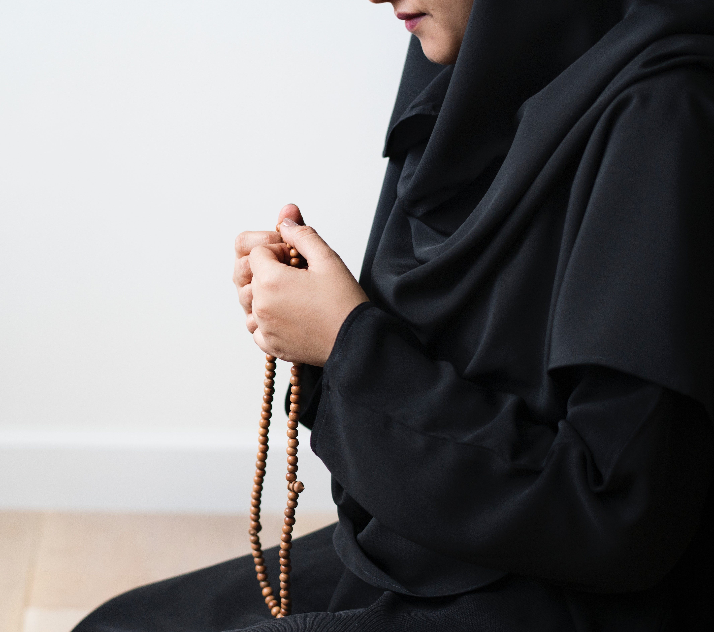

Mana yang lebih afdhal, memperbanyak shalawat ataukah banyak dzikir?
Shalawat termasuk bagian dari dzikir. Karena dalam lafadz shalawat, kita berdoa kepada Allah, “Allahumma shalli wa sallim ‘ala Nabiyyinaa Muhammad”, yang artinya, ‘Ya Allah, berikanlah shalawat dan salam kepada Nabi kita Muhammad.’
Dalam kalimat ini terdapat kandungan makna,
[1] Bahwa Allah adalah Rab semesta alam yang mengatur semua makhluk-Nya. Karena itu, kita berdoa kepada-Nya. Dan doa tidak akan kita arahkan kecuali kepada Dzat yang kita yakini bisa mengambulkan doa.
[2] Bahwa Nabi Muhammad shallallahu ‘alaihi wa sallam adalah wali Allah, sehingga berhak untuk mendapatkan shalawat dan salam.
[3] Bahwa kita mengakui bahwa Allah adalah sesembahan kita, sehingga kita memanggil dengan Allahumma, ya Allah… karena kata ‘Allah’ bermakna al-Ilaah, yang artinya al-Ma’luuh (Dzat yang diibadahi).
Karena itu, ketika kita bershalawat kepada Nabi shallallahu ‘alaihi wa sallam, hakekatnya kita juga sedang melakukan dzikrullah.
Selanjutnya, ada pertanyaan, jika ada dua jenis dzikrullah, mana yang lebih utama?
Menyebut kalimat thayyibah – seperti Subhanallah, Alhamdulillah, Allahu Akbar, Laa ilaaha illallah, dst, termasuk dzikir yang mulia. Nabi shallallahu ‘alaihi wa sallam bersabda, أَحَبُّ الْكَلاَمِ إِلَى اللَّهِ أَرْبَعٌ سُبْحَانَ اللَّهِ وَالْحَمْدُ لِلَّهِ وَلاَ إِلَهَ إِلاَّ اللَّهُ وَاللَّهُ أَكْبَرُ. لاَ يَضُرُّكَ بَأَيِّهِنَّ بَدَأْتَ Ucapan yang paling dicintai Allah ada 4: Subhanallah, Alhamdulillah, Laa ilaaha illallah, dan Allahu Akbar. Tidak masalah membacanya mau dimulai dari mana. (HR. Muslim 5724)
Al-Quran juga termasuk dzikirullah yang mulia. Nabi shallallahu ‘alaihi wa sallam bersabda, وَفَضْلُ كَلاَمِ اللَّهِ عَلَى سَائِرِ الْكَلاَمِ كَفَضْلِ اللَّهِ عَلَى خَلْقِهِ Keutamaan kalam Allah dibandingkan ucapan yang lain, seperti keutamaan Allah dibandingkan makluk-Nya. (HR. Turmudzi 3176 dan ad-Darimi 3419). Hadis kedua ini dijadikan dalil oleh para ulama, diantaranya Imam as-Syafii untuk mengatakan bahwa membaca al-Quran adalah dzikir yang paling afdhal. Dalam kitabnya al-Majmu’ Syarh Muhadzab, an-Nawawi menyebutkan, وقد نقل الشيخ أبو حامد في تعليقه في هذا الموضع أن الشافعي نص أن قراءة القرآن أفضل الذكر Syaikh Abu Hamid dalam catatan beliau di bab ini menukil perkataan Imam as-Syafii yang menegaskan bahwa membaca al-Quran adalah dzikir yang paling afdhal. (al-Majmu’, 8/44) Lalu bagaimana komprominya dengan hadis atasnya, An-Nawawi menjelaskan, والجواب: أن المراد أن هذا أحب كلام الآدميين وأفضله, لا أنه أفضل من كلام الله, والله أعلم Jawabannya, bahwa yang dimaksud dalam hadis ini (hadis Muslim), bahwa kalimat thayyibah itu adalah ucapan manusia yang paling dicintai Allah dan yang paling afdhal. Bukan berarti dia lebih afdhal dibandingkan kalam Allah (al-Quran). Allahu a’lam. (al-Majmu’, 8/45) Demikian pula shalawat. Allah memerintahkan kita untuk banyak bershalawat. Allah berfirman, إِنَّ اللَّهَ وَمَلائِكَتَهُ يُصَلُّونَ عَلَى النَّبِيِّ يَا أَيُّهَا الَّذِينَ آمَنُوا صَلُّوا عَلَيْهِ وَسَلِّمُوا تَسْلِيماً “Sesungguhnya Allah dan malaikatnya bershalawat kepada nabi, wahai orang-orang yang beriman bershalawatlah kalian kepadanya dan juga ucapkanlah salam untuknya.” (Qs. Al- Ahzab: 56). Semakin banyak shalawat yang kita lantunkan, sebakin besar peluang untuk mendapat keistimewaan di sisi Nabi shallallahu ‘alaihi wa sallam. Dalam sebuah hadis, beliau bersabda, أولَى الناسِ بِيْ يوم القيامة أكثرُهم عليَّ صلاةً “Orang yang paling dekat dariku pada hari kiamat adalah yang paling banyak bershalawat kepadaku.” (HR. At-Tirmidzi, dan dihasankan Al-Albani). Yang kami pahami – Allahu a’lam – membaca al-Quran merupakan dzikir yang paling afdhal, karena al-Quran adalah kalam Allah. Selanjutnya, mana yang lebih utama, dzikrullah ataukah shalawat? Jika dikaitkan dengan sebab, maka beribadah sesuai sebab itulah yang paling afdhal. Membaca shalawat pada waktu dianjurkan bershalawat – misalnya setelah adzan, lebih afdhal dibandingkan dzikir yang lain. Karena dia dibaca sesuai waktunya. Demikian pula, membaca kalimat thayibah Subhanallah, Alhamdulillah, dan Allahu Akbar, ketika dilakukan sesuai waktunya – misalnya setelah shalat wajib – lebih utama dibandingkan membaca shalawat. Sementara jika tidak dikaitkan dengan sebab tertentu, keduanya sama-sama afdhal. Dan yang lebih tepat adalah mengamalkannya secara bergantian, agar kita melestarikan semua ajaran syariat. Demikian, Allahu a’lam. Dijawab oleh Ustadz Ammi Nur Baits
Social